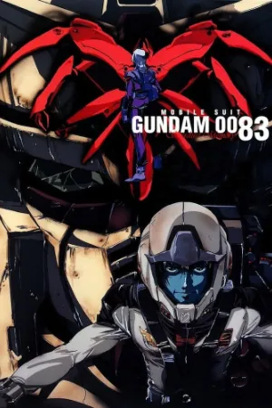
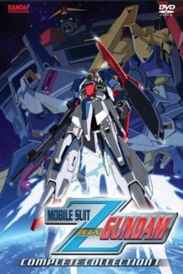
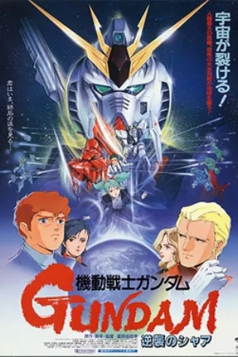
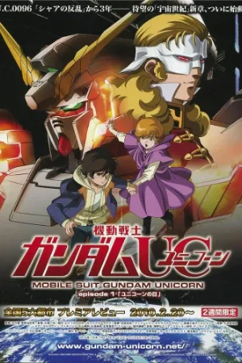
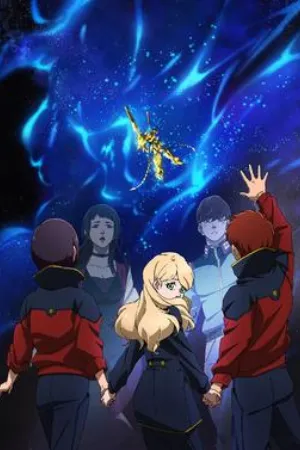
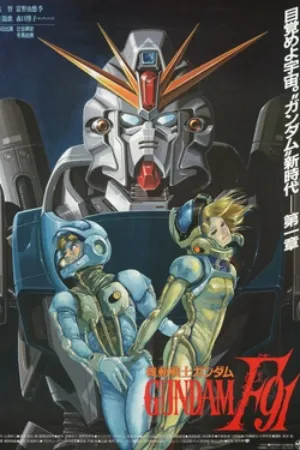

Gundam watch order.
The Universal Century is Gundam’s main timeline. This list follows it in story order, from the One Year War to the 0150s. Gundam’s other timelines, such as Wing and Iron-Blooded Orphans, stand alone and can be watched any time.
Enter this code in Kuvacult to create this watchlist, already in order.
Gundam in order
 1
1Mobile Suit Gundam: The Origin
 2
2Mobile Suit Gundam: The 08th MS Team
 3
3Mobile Suit Gundam
 4
4Mobile Suit Gundam 0080: War in the Pocket

5Mobile Suit Gundam 0083: Stardust Memory

6Mobile Suit Zeta Gundam
- 7
Mobile Suit Gundam ZZ

8Mobile Suit Gundam: Char’s Counterattack

9Mobile Suit Gundam Unicorn

10Mobile Suit Gundam Narrative
- 11
Mobile Suit Gundam: Hathaway

12Mobile Suit Gundam F91
- 13
Mobile Suit Victory Gundam
Questions
Where should I start with Gundam?
Mobile Suit Gundam (1979) is the classic starting point. The Origin is a prequel best watched after it, even though it comes first in the timeline.
Do I need to watch all of Gundam?
No. Only the Universal Century titles connect. Series like Gundam Wing, 00 and Iron-Blooded Orphans each tell their own story.
More chronological orders


Watch it with your friends.
Kuvacult is a free movie tracker with shared watchlists, a veto game for picking movie night, and séances for watching together.